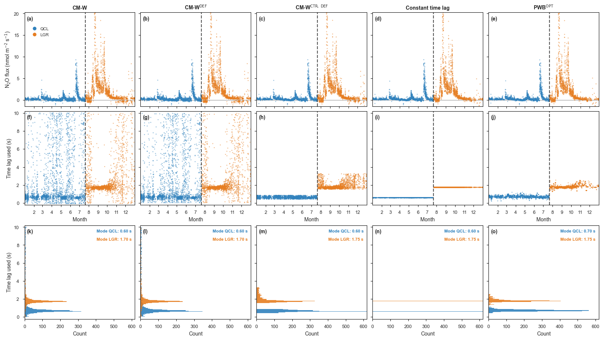
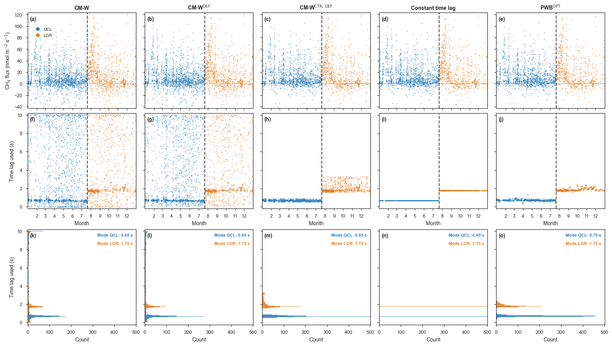

from datetime import datetime
from pathlib import Path
import numpy as np
import pandas as pd
import matplotlib.dates as mdates
import matplotlib.ticker as mticker
import matplotlib.pyplot as plt
from matplotlib.lines import Line2D
from diive.core.io.files import load_parquet
# White figure background (on screen and in saved PNGs).
plt.rcParams["figure.facecolor"] = "white"
plt.rcParams["savefig.facecolor"] = "white"
plt.rcParams["axes.facecolor"] = "white"
NB_START = datetime.now() # notebook start time (reported in the last cell)08 · Merged analyzers: full-year QC fluxes
The two analyzers cover complementary halves of 2021: the QCL runs in campaign 2021_1 (January to 20 July) and the LGR in campaign 2021_2 (22 July to December). Concatenating them over time gives one continuous full-year series per variant. This notebook merges the two and plots the merged, quality-controlled flux for the whole of 2021.
Fluxes are the USTAR-filtered QC fluxes from the flux processing chain (notebook 05); the merge just stitches the QCL and LGR halves together at the campaign boundary (a light dashed line marks the handover).
Two figures are produced, one per gas:
- N2O: the five variants as columns, each a merged full-year series, with the QC flux (top), the merged time lag used (middle), and a histogram of that lag with its mode highlighted (bottom). Saved as
figures/08_{scenario}_merged_n2o.png. - CH4: the same, for methane. Saved as
figures/08_{scenario}_merged_ch4.png.
Inputs: - data/05-flux_processing_chain_parquet/ for the QC fluxes. - data/02-…_subsets/ and data/01-pwb_tlag_summary_parquet/ for the time lag (the chain output does not carry it).
Imports
Configuration
USTAR_SCENARIO selects which of the three USTAR-filtered fluxes to plot. The five variants are the columns; each column is the QCL half and the LGR half of that variant merged into one full-year series. The lag for variants *-1 to *-4 is the EddyPro time lag used, while the PWB\(_{OPT}\) column (*-5) uses its optimised lag (the PWB estimate after the S1/S2/S3 decision rule). The constant-lag variant (*-4) carries two constants here, one per campaign, so its histogram row shows a single filled bin at each constant rather than a spread.
Method abbreviations follow Vitale et al. (2024): CM = covariance maximisation, CM\(_{CTR}\) = constrained CM (narrow window), PWB\(_{OPT}\) = optimised pre-whitening with block-bootstrap.
FPCDIR = Path("../data/05-flux_processing_chain_parquet") # QC fluxes
SUBSETDIR = Path("../data/02-eddypro_fluxes_level-1_parquet_subsets") # lag, *-1..*-4
PWBDIR = Path("../data/01-pwb_tlag_summary_parquet") # lag, *-5
FIGDIR = Path("../figures")
FIGDIR.mkdir(parents=True, exist_ok=True)
YEAR = 2021
USTAR_SCENARIO = "CUT_50" # one of CUT_16 / CUT_50 / CUT_84
FIGSIZE = (16, 9)
DPI = 300
# The two analyzers cover complementary halves of the year; QCL is the earlier
# campaign (plotted first), LGR the later one.
ANALYZERS = ["QCL", "LGR"]
# Columns = the five time-lag variants; each is merged across both analyzers.
VARIANTS = [1, 2, 3, 4, 5]
PWB_VARIANT = 5 # the PWB variant uses its detected lag, not the EddyPro lag
# Column titles describe each variant's time-lag method (see
# docs/processing-versions.md). CM-W = covariance maximisation of the gas against
# the vertical wind speed w (0 to 10 s search window, |cov| max criterion). The
# upright DEF superscript marks the fallback to the nominal/default lag when the
# peak search fails (variants *-2 and *-3); the CTR superscript marks the
# constrained (narrow-window) CM (variant *-3). PWB^OPT is the optimised
# pre-whitening lag (S1/S2/S3 decision rule applied to the PWB estimates; the lag
# column read below, *_tlag_final_pf_s, is exactly that lag). These map to the
# Vitale et al. (2024) abbreviations CM, CM_CTR and PWB_OPT.
VARIANT_NAMES = {
1: "CM-W",
2: r"CM-W$^{\mathrm{DEF}}$",
3: r"CM-W$^{\mathrm{CTR,\ DEF}}$",
4: "Constant time lag",
5: r"PWB$^{\mathrm{OPT}}$",
}
# Per gas: the flux variable, the EddyPro time-lag-used variable, and the PWB_OPT
# optimised-lag column.
GASES = {
"N2O": {"flux": "FN2O", "lag": "N2O_TLAG_USED", "pwb_lag": "n2o_tlag_final_pf_s"},
"CH4": {"flux": "FCH4", "lag": "CH4_TLAG_USED", "pwb_lag": "ch4_tlag_final_pf_s"},
}
# One color per instrument, used across all three rows (flux, lag, histogram).
# Distinct but from neighbouring hues, so the figure stays cohesive.
INSTRUMENT_COLORS = {"QCL": "#3182bd", "LGR": "#e67e22"} # blue, orange
# Pretty gas labels for axis text and titles.
GAS_LABEL = {"N2O": "N$_2$O", "CH4": "CH$_4$"}
BIN_S = 0.05 # tlag raster (s); the mode is snapped to this grid
PCTL = (1, 99) # robust flux y-range percentiles
SEARCH_WINDOW = (0.0, 10.0) # covariance-maximization search window (s)
FRINGE_MARGIN = 0.1 # peak search ignores lags within this of the rails
def qc_col(fluxvar, scenario):
"""Name of the USTAR-filtered, QCF-accepted flux column in the fpc output."""
return f"{fluxvar}_L3.1_L3.3_{scenario}_QCF"
print(f"Merging {ANALYZERS} into full-year series, USTAR scenario: {USTAR_SCENARIO}")Merging ['QCL', 'LGR'] into full-year series, USTAR scenario: CUT_50Load and merge the QC fluxes and the time lag
For each analyzer, variant and gas the QC flux is pulled from its *_fpc.parquet (the single USTAR_SCENARIO column) and the time lag from the column subsets (*-1 to *-4) or the PWB summaries (*-5). The time lag is then masked to the records where the QC flux survives: quality control removes many half-hours, so only the lags that back a plotted flux are kept (the lag row, histogram and mode then describe exactly the records shown in the flux row). The two analyzers are then concatenated over time per variant. Because the campaigns do not overlap, this is a clean stitch: no timestamp appears in both halves.
def _yr(df):
return df.loc[df.index.year == YEAR]
# Per-analyzer QC flux and lag, then merged full-year series keyed by (variant, gas).
qcflux, lag_used = {}, {} # per (analyzer, variant, gas)
merged_flux, merged_lag = {}, {} # per (variant, gas): full-year series
boundary = {} # campaign handover per analyzer pair
for var in VARIANTS:
for analyzer in ANALYZERS:
code = f"{analyzer}-{var}"
# Lag source: PWB summary for the PWB variant, subset otherwise.
if var == PWB_VARIANT:
lagdf = _yr(load_parquet(filepath=str(PWBDIR / f"{code}_pwb_tlag.parquet")))
else:
lagdf = _yr(load_parquet(filepath=str(SUBSETDIR / f"{code}.parquet")))
for gas, v in GASES.items():
df = _yr(load_parquet(filepath=str(FPCDIR / f"{code}_{v['flux']}_fpc.parquet")))
fluxseries = df[qc_col(v["flux"], USTAR_SCENARIO)]
qcflux[(analyzer, var, gas)] = fluxseries
lagcol = v["pwb_lag"] if var == PWB_VARIANT else v["lag"]
# Keep the time lag only where the QC flux survives: quality control
# drops many half-hours, and a lag without a plotted flux would be
# misleading. Align the lag to the flux index and mask out timestamps
# where the flux is NaN, so the lag row, histogram and mode describe
# exactly the records shown in the flux row.
lag = lagdf[lagcol].reindex(fluxseries.index)
lag_used[(analyzer, var, gas)] = lag.where(fluxseries.notna())
for gas in GASES:
merged_flux[(var, gas)] = pd.concat(
[qcflux[(a, var, gas)] for a in ANALYZERS]).sort_index()
merged_lag[(var, gas)] = pd.concat(
[lag_used[(a, var, gas)] for a in ANALYZERS]).sort_index()
# Campaign handover: midpoint between the last QCL and first LGR timestamp
# (identical across variants/gases; take it from variant 1, N2O).
_qcl_end = qcflux[("QCL", 1, "N2O")].index.max()
_lgr_start = qcflux[("LGR", 1, "N2O")].index.min()
HANDOVER = _qcl_end + (_lgr_start - _qcl_end) / 2
for var in VARIANTS:
s = merged_flux[(var, "N2O")]
print(f"variant -{var}: {int(s.notna().sum())} valid merged QC N2O "
f"({s.index.min():%Y-%m-%d} to {s.index.max():%Y-%m-%d})")
print(f"campaign handover marked at {HANDOVER:%Y-%m-%d %H:%M}") > Loaded .parquet file ..\data\02-eddypro_fluxes_level-1_parquet_subsets\QCL-1.parquet (0.003
seconds).
> Loaded .parquet file ..\data\05-flux_processing_chain_parquet\QCL-1_FN2O_fpc.parquet (0.009
seconds).
> Loaded .parquet file ..\data\05-flux_processing_chain_parquet\QCL-1_FCH4_fpc.parquet (0.009
seconds).
> Loaded .parquet file ..\data\02-eddypro_fluxes_level-1_parquet_subsets\LGR-1.parquet (0.003
seconds).
> Loaded .parquet file ..\data\05-flux_processing_chain_parquet\LGR-1_FN2O_fpc.parquet (0.007
seconds).
> Loaded .parquet file ..\data\05-flux_processing_chain_parquet\LGR-1_FCH4_fpc.parquet (0.007
seconds).
> Loaded .parquet file ..\data\02-eddypro_fluxes_level-1_parquet_subsets\QCL-2.parquet (0.002
seconds).
> Loaded .parquet file ..\data\05-flux_processing_chain_parquet\QCL-2_FN2O_fpc.parquet (0.008
seconds).
> Loaded .parquet file ..\data\05-flux_processing_chain_parquet\QCL-2_FCH4_fpc.parquet (0.008
seconds).
> Loaded .parquet file ..\data\02-eddypro_fluxes_level-1_parquet_subsets\LGR-2.parquet (0.004
seconds).
> Loaded .parquet file ..\data\05-flux_processing_chain_parquet\LGR-2_FN2O_fpc.parquet (0.007
seconds).
> Loaded .parquet file ..\data\05-flux_processing_chain_parquet\LGR-2_FCH4_fpc.parquet (0.007
seconds).
> Loaded .parquet file ..\data\02-eddypro_fluxes_level-1_parquet_subsets\QCL-3.parquet (0.003
seconds).
> Loaded .parquet file ..\data\05-flux_processing_chain_parquet\QCL-3_FN2O_fpc.parquet (0.007
seconds).
> Loaded .parquet file ..\data\05-flux_processing_chain_parquet\QCL-3_FCH4_fpc.parquet (0.007
seconds).
> Loaded .parquet file ..\data\02-eddypro_fluxes_level-1_parquet_subsets\LGR-3.parquet (0.003
seconds).
> Loaded .parquet file ..\data\05-flux_processing_chain_parquet\LGR-3_FN2O_fpc.parquet (0.007
seconds).
> Loaded .parquet file ..\data\05-flux_processing_chain_parquet\LGR-3_FCH4_fpc.parquet (0.006
seconds).
> Loaded .parquet file ..\data\02-eddypro_fluxes_level-1_parquet_subsets\QCL-4.parquet (0.002
seconds).
> Loaded .parquet file ..\data\05-flux_processing_chain_parquet\QCL-4_FN2O_fpc.parquet (0.007
seconds).
> Loaded .parquet file ..\data\05-flux_processing_chain_parquet\QCL-4_FCH4_fpc.parquet (0.006
seconds).
> Loaded .parquet file ..\data\02-eddypro_fluxes_level-1_parquet_subsets\LGR-4.parquet (0.003
seconds).
> Loaded .parquet file ..\data\05-flux_processing_chain_parquet\LGR-4_FN2O_fpc.parquet (0.008
seconds).
> Loaded .parquet file ..\data\05-flux_processing_chain_parquet\LGR-4_FCH4_fpc.parquet (0.008
seconds).
> Loaded .parquet file ..\data\01-pwb_tlag_summary_parquet\QCL-5_pwb_tlag.parquet (0.010 seconds).
> Loaded .parquet file ..\data\05-flux_processing_chain_parquet\QCL-5_FN2O_fpc.parquet (0.006
seconds).
> Loaded .parquet file ..\data\05-flux_processing_chain_parquet\QCL-5_FCH4_fpc.parquet (0.007
seconds).
> Loaded .parquet file ..\data\01-pwb_tlag_summary_parquet\LGR-5_pwb_tlag.parquet (0.008 seconds).
> Loaded .parquet file ..\data\05-flux_processing_chain_parquet\LGR-5_FN2O_fpc.parquet (0.006
seconds).
> Loaded .parquet file ..\data\05-flux_processing_chain_parquet\LGR-5_FCH4_fpc.parquet (0.006
seconds).
variant -1: 4787 valid merged QC N2O (2021-01-01 to 2021-12-31)
variant -2: 4767 valid merged QC N2O (2021-01-01 to 2021-12-31)
variant -3: 4295 valid merged QC N2O (2021-01-01 to 2021-12-31)
variant -4: 3975 valid merged QC N2O (2021-01-01 to 2021-12-31)
variant -5: 3993 valid merged QC N2O (2021-01-01 to 2021-12-31)
campaign handover marked at 2021-07-21 13:15Figures: merged full-year QC flux, time lag, lag histogram
One figure per gas. Three rows (QC flux over time, time lag used over time, lag histogram) with the five variants as columns. The two instruments carry one color each (QCL blue, LGR yellow-orange), used consistently across all three rows; the top-left flux panel carries the instrument legend, and a light dashed line marks the QCL to LGR handover in the top two rows.
The bottom row overlays the two instruments’ lag histograms, binned on the EddyPro tlag raster (0.05 s bins, one bar per reported lag value), drawn with time lag on the vertical axis and count on the horizontal axis, so it reads as a rotated histogram aligned with the lag row above it. The two instruments’ bars are overlaid (not stacked) and semi-transparent, so both stay visible where they overlap. Within each row the y-axis is shared across the columns (only the first column shows y tick labels): flux, time lag, and now also the histogram row’s time-lag axis. The shared count axis is scaled to the PWB\(_{OPT}\) variant’s tallest bar, so every column is read against the PWB method’s peak count; the more concentrated variants (the narrow-window CM, and the single-bin constant lag) have taller bars that run past the right edge. Each instrument’s modal lag is printed in the upper-right corner of the panel, coloured by instrument (Mode QCL above, Mode LGR below). The mode is the peak 0.05 s bin of the non-fringe lags, so it lands on the grid (e.g. 0.65 s) and the 0 s / 10 s search window rails (mostly *-1) cannot be mistaken for it. The constant-lag variant (*-4) is single-valued per campaign, so its whole record falls into one 0.05 s bin (that bar overshoots the count axis and reaches the right edge).
def robust_ylim(values, pctl=PCTL, pad_frac=0.05):
"""Percentile-based y-limits with a small symmetric pad."""
lo, hi = np.nanpercentile(values, pctl)
pad = pad_frac * (hi - lo)
return lo - pad, hi + pad
LAG_YLIM = (-0.2, 10.2) # full 0 to 10 s search window with a small pad
LO_EDGE = SEARCH_WINDOW[0] + FRINGE_MARGIN
HI_EDGE = SEARCH_WINDOW[1] - FRINGE_MARGIN
MARKER_S = 4 # scatter marker size for the flux and lag rows
LETTERS = "abcdefghijklmnopqrstuvwxyz"
# Histogram bins match the EddyPro tlag raster (BIN_S = 0.05 s) and are centred on
# the raster multiples, so each bar sits exactly on a reported lag value.
HIST_EDGES = np.arange(SEARCH_WINDOW[0] - BIN_S / 2, SEARCH_WINDOW[1] + BIN_S, BIN_S)
HIST_CENTERS = 0.5 * (HIST_EDGES[:-1] + HIST_EDGES[1:]) # bar centres on the lag axis
# Upper-right corner rows for the two instruments' modal-lag labels (axes fraction).
LABEL_YFRAC = (0.96, 0.87)
def month_int(x, pos):
"""Format a date tick as its (integer) month number, no year."""
return f"{mdates.num2date(x).month}"
def panel_letter(ax, text):
"""Bold panel letter in the top-left corner, over a faint white patch."""
ax.text(0.02, 0.96, f"({text})", transform=ax.transAxes, va="top", ha="left",
fontsize=10, fontweight="bold",
bbox=dict(boxstyle="square,pad=0.1", fc="white", ec="none", alpha=0.6))
def style_axes(ax):
"""Black spines, short outward major/minor ticks, no grid."""
ax.grid(False)
for spine in ax.spines.values():
spine.set_color("black")
spine.set_linewidth(0.8)
ax.tick_params(which="major", length=3.5, width=0.8, direction="out", color="black")
ax.tick_params(which="minor", length=2.0, width=0.6, direction="out", color="black")
def lag_counts(values):
"""Histogram counts of a lag series on the fixed HIST_EDGES (0.05 s raster).
The constant-lag variant is single-valued, so it lands entirely in one bin
(that bar overshoots the PWB-scaled count axis and reaches the right edge).
Returns None only for an empty or too-short series."""
v = np.asarray(pd.Series(values).dropna(), dtype=float)
if v.size < 5:
return None
return np.histogram(v, bins=HIST_EDGES)[0]
def mode_on_grid(values):
"""Modal lag snapped to the BIN_S (0.05 s) tlag raster: the peak 0.05 s bin of
the non-fringe lags (so the 0 s / 10 s rails cannot be the mode), e.g. 0.65 s.
Matches how EddyPro reports the lag, so the reported value sits on the grid
rather than on the finer histogram axis. Returns None if no non-fringe lag
exists."""
s = pd.Series(values).dropna()
s = s[(s > LO_EDGE) & (s < HI_EDGE)]
if s.empty:
return None
lo_k = int(np.floor(s.min() / BIN_S))
hi_k = int(np.ceil(s.max() / BIN_S))
edges = (np.arange(lo_k, hi_k + 2) - 0.5) * BIN_S # bins centred on k * BIN_S
counts, _ = np.histogram(s, bins=edges)
centers = 0.5 * (edges[:-1] + edges[1:])
return float(centers[int(np.argmax(counts))])
# Legend proxies for the two instruments (shown in the top-left flux panel).
inst_handles = [Line2D([0], [0], marker="o", linestyle="", markersize=7,
color=INSTRUMENT_COLORS[a], label=a) for a in ANALYZERS]
for gas in GASES:
columns = VARIANTS
ncols = len(columns)
glabel = GAS_LABEL[gas]
# Flux y-range across both instruments and all variants. For N2O the upper
# limit is the 99.5th percentile, high enough to show most of the tall N2O
# peaks while clipping the few extreme outliers that would otherwise squash the
# bulk of the data; the lower limit keeps the robust 1st percentile. CH4 uses
# the symmetric robust range.
flux_vals = np.concatenate(
[merged_flux[(var, gas)].to_numpy().ravel() for var in columns])
if gas == "N2O":
lo, hi = np.nanpercentile(flux_vals, (PCTL[0], 99.5))
pad = 0.05 * (hi - lo)
flux_ylim = (lo - pad, hi + pad)
else:
flux_ylim = robust_ylim(flux_vals)
# Common lag range for the histogram row (data-driven, shared across columns).
# The histogram row plots time lag on the vertical axis, so this is its y-range.
all_lag = np.concatenate(
[lag_used[(a, var, gas)].dropna().to_numpy()
for var in columns for a in ANALYZERS])
lag_range = (float(np.nanmin(all_lag)) - 0.2, float(np.nanmax(all_lag)) + 0.2)
# Pre-compute each column/instrument lag histogram (bin counts) and its
# raster-snapped mode.
hist_cache = {}
for var in columns:
for a in ANALYZERS:
counts = lag_counts(lag_used[(a, var, gas)])
m = mode_on_grid(lag_used[(a, var, gas)])
hist_cache[(var, a)] = (counts, m)
# Scale the shared count axis to the PWB_OPT variant's tallest bar, so every
# column is read against the PWB method's peak count. Taller bars from the more
# concentrated variants (the narrow-window CM, and the single-bin constant lag)
# run past the right edge.
count_max = max(
(float(hist_cache[(PWB_VARIANT, a)][0].max())
for a in ANALYZERS if hist_cache[(PWB_VARIANT, a)][0] is not None),
default=1.0)
count_xlim = (0, count_max * 1.1)
fig, axes = plt.subplots(nrows=3, ncols=ncols,
figsize=FIGSIZE, constrained_layout=True)
for ci, var in enumerate(columns):
ax_flux, ax_lag, ax_hist = axes[0, ci], axes[1, ci], axes[2, ci]
ax_lag.sharex(ax_flux)
# Within each row the y-axis is shared across columns; only the first
# column keeps its y tick labels.
if ci > 0:
ax_flux.sharey(axes[0, 0])
ax_lag.sharey(axes[1, 0])
ax_hist.sharey(axes[2, 0])
for ax in (ax_flux, ax_lag, ax_hist):
ax.tick_params(labelleft=False)
for r, ax in enumerate((ax_flux, ax_lag, ax_hist)):
style_axes(ax)
panel_letter(ax, LETTERS[r * ncols + ci])
ax_flux.set_title(VARIANT_NAMES[var], fontweight="bold", fontsize=10)
# Rows 1 and 2: QC flux and time lag over time, one color per instrument.
ax_flux.axhline(0, color="0.55", lw=0.8, zorder=0.5) # zero reference
for a in ANALYZERS:
c = INSTRUMENT_COLORS[a]
f = qcflux[(a, var, gas)].dropna()
ax_flux.scatter(f.index, f, s=MARKER_S, alpha=0.5, color=c, edgecolors="none")
lg = lag_used[(a, var, gas)].dropna()
ax_lag.scatter(lg.index, lg, s=MARKER_S, alpha=0.5, color=c, edgecolors="none")
for ax in (ax_flux, ax_lag):
ax.axvline(HANDOVER, color="0.25", lw=1.6, ls="--", alpha=0.9)
ax_flux.set_ylim(flux_ylim)
if gas == "N2O":
# Flux tick labels in steps of 5 on the top row for N2O.
ax_flux.yaxis.set_major_locator(mticker.MultipleLocator(5))
ax_flux.tick_params(labelbottom=False)
ax_lag.set_ylim(*LAG_YLIM)
# Time axis: every month is a major tick, labelled with its integer month
# number 2 to 12 (no year); no minor ticks. A "Month" axis label.
ax_lag.xaxis.set_major_locator(mdates.MonthLocator(interval=1))
ax_lag.xaxis.set_major_formatter(mticker.FuncFormatter(month_int))
ax_lag.xaxis.set_minor_locator(mticker.NullLocator())
ax_lag.set_xlabel("Month")
span = merged_lag[(var, gas)].index
ax_lag.set_xlim(span.min(), span.max())
# Row 3: lag histogram (bin counts) per instrument, time lag on the vertical
# axis and count on the horizontal axis (a rotated histogram aligned with
# the lag row above). The two instruments' bars are overlaid (not stacked)
# and semi-transparent so both stay visible where they overlap. Each
# instrument's modal lag (peak 0.05 s bin, EddyPro tlag raster) is printed in
# the upper-right corner, coloured by instrument. The constant-lag variant is
# single-valued, so its whole record falls in one 0.05 s bin whose bar
# overshoots the PWB-scaled count axis and reaches the right edge.
for i, a in enumerate(ANALYZERS):
c = INSTRUMENT_COLORS[a]
counts, m = hist_cache[(var, a)]
if counts is not None:
ax_hist.barh(HIST_CENTERS, counts, height=BIN_S, color=c,
alpha=0.9, align="center", linewidth=0, zorder=1)
if m is None:
continue
# Modal lag printed in the upper-right corner, coloured by instrument.
ax_hist.text(0.97, LABEL_YFRAC[i], f"Mode {a}: {m:.2f} s",
transform=ax_hist.transAxes, ha="right", va="top",
fontsize=8, fontweight="bold", color=c, zorder=6)
ax_hist.set_xlim(*count_xlim)
ax_hist.set_xlabel("Count")
# Shared time-lag axis for the bottom (histogram) row (set once; sharey propagates).
axes[2, 0].set_ylim(*lag_range)
axes[0, 0].set_ylabel(f"{glabel} flux (nmol m$^{{-2}}$ s$^{{-1}}$)")
axes[1, 0].set_ylabel("Time lag used (s)")
axes[2, 0].set_ylabel("Time lag used (s)")
axes[0, 0].legend(handles=inst_handles, loc="upper left",
bbox_to_anchor=(0.02, 0.88), fontsize=8, framealpha=0.9,
handletextpad=0.4, borderpad=0.3)
out = FIGDIR / f"08_{USTAR_SCENARIO.lower()}_merged_{gas.lower()}.png"
fig.savefig(out, dpi=DPI, bbox_inches="tight")
print(f"Saved {out}")
plt.show()Saved ..\figures\08_cut_50_merged_n2o.png
Saved ..\figures\08_cut_50_merged_ch4.png
Runtime
NB_END = datetime.now()
print(f"Start: {NB_START:%Y-%m-%d %H:%M:%S}")
print(f"End: {NB_END:%Y-%m-%d %H:%M:%S}")
print(f"Runtime: {NB_END - NB_START}")Start: 2026-07-13 19:09:22
End: 2026-07-13 19:09:36
Runtime: 0:00:13.462989